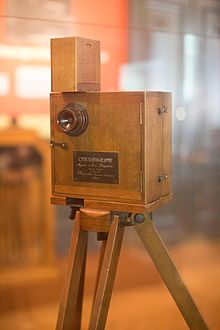

HISTORY OF MOVIE WORLD

The history of film began in the 1890s, when motion picture cameras were invented and film production companies started to be established. Because of the limits of technology, films of the 1890s were under a minute long and until 1927 motion pictures were produced without sound. The first decade of motion picture saw film moving from a novelty to an established mass entertainment industry. The films became several minutes long consisting of several shots. The first rotating camera for taking panning shots was built in 1898. The first film studios were built in 1897. Special effects were introduced and film continuity, involving action moving from one sequence into another, began to be used. In the 1900s, continuity of action across successive shots was achieved and the first close-up shot was introduced (that some claim D. W. Griffith invented). Most films of this period were what came to be called "chase films". The first use of animation in movies was in 1899. The first feature length multi-reel film was a 1906 Australian production. The first successful permanent theatre showing only films was "The Nickelodeon" in Pittsburgh in 1905. By 1910, actors began to receive screen credit for their roles and the way to the creation of film stars was opened. Regular newsreels were exhibited from 1910 and soon became a popular way for finding out the news. From about 1910, American films had the largest share of the market in Australia and in all European countries except France.
|